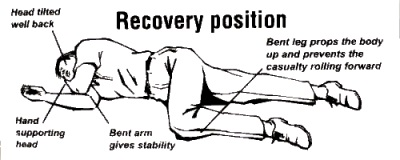

Welcome! This is a short guide on everyday first aid.
When you approach the scene of accident or emergency, follow the DRABC Action Plan:
You should assess if there is any danger in the situation to you, the bystanders and the casualty:
Always ensure that the area is for you to approach
Is the casualty RESPONSIVE?
GENTLY shake the patient's shoulders and ask: Can you hear me? What is your name? (shouting loudly into BOTH ears
if the casualty RESPONDS, check for and manage bleeding and other injuries
if the casualty is UNRESPONSIVE:
CALL FOR HELP
Roll the casualty into the recovery position (see image)
If help arrives ask him/her to call 999 and ask for an ambulance and tell them that you have x year old female/male who is unconscious and where you are.
If patient is unconcious, continue to assess the airway
Open the mouth and clear any foreign object eg blood, vomit, food, borken teeth. Only remove dentures if loose or broken.
Place one hand high on the casualty's forehead. Support the chin with the other hand. Gently tilt the head backwards. Lift the chin forward to move the tongue out of the airway allowing the casualty to breathe.and open the casualty's mouth slightly. JAW THRUST - mandatory manoeuvre if C- spine (neck/head) injury is suspected
Once or if airway is clear, continue to assess the breathing for upto 10 seconds
LOOK for the moverment of chest up and down
LISTEN for breath sounds
FEEL with your cheek
If casualty is unconscious and breathing: place him/her in the recovery position, check for and manage other injuries / illnesses. Closely monitor signs of life
If casualty is unconscious and not breathing: with the casualty on their back give 2 full breaths. Check for signs of life.
Feel the pulse at the neck (carotic pulse)
If pulse is NOT present, Cardiopulmonary Resuscitation (CPR) if required: 30 chest compressions (2 per second) followed by 2 breaths. Aim for 120 compression in 1 minute.
Continue CPR until qualified personnel arrive or signs of life return